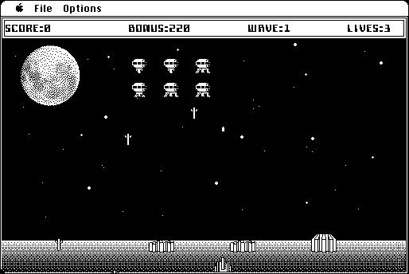

Download
Invaders_2.0.zip (250K) Invaders! 2.0 repackaged into a zipped hfs disk image and checksum file. The disk image can be mounted with Mini vMac.
Invaders_2.0.DSK.zip (246K) Invaders! 2.0 in the original format. (Which is also a zipped disk image, but repackaged above anyway to be more consistent with other downloads.)
copyright: Simone Bettini
mod date: Apr 28, 1996
license: free for non-commercial use
last known url
(gone)
A "classic Invaders game, close to the original arcade game", "based on sample program for Ingemar Ragnemalm's Sprite Animation Toolkit (SAT)." For "system 6.0.7 or later". In system 6, the initial help dialog goes off the edge of the screen, but otherwise the program works fine.

If you find these downloads useful, please consider helping the Gryphel Project, which hosts them.
Here are the md5 checksums for the downloads, signed with Gryphel Key 5:
--------- GRY SIGNED TEXT --------- 0762790286bac6a549db630918a383ba Invaders_2.0.zip 535e43bd8d3685b57d5005a844b96ca8 Invaders_2.0.DSK.zip ------- BEGIN GRY SIGNATURE ------- Gry/4Xa8CFcUzxdN/F8LC2CliXdorzY7QJrPG1rizenZEvDsX4BN1hzPbz+hQH87 1ZQN+lvVrQi5L8Hvj+iy1vB21JjftcsNK5+DpA3umeOMU2zbqEJBHlXfjZMRukom gFXT871r63YAl1Jout2MAWBPvZAQkcyqe6CP0MIGvZG6xURM9BS5g2iujMa4GooA -------- END GRY SIGNATURE --------